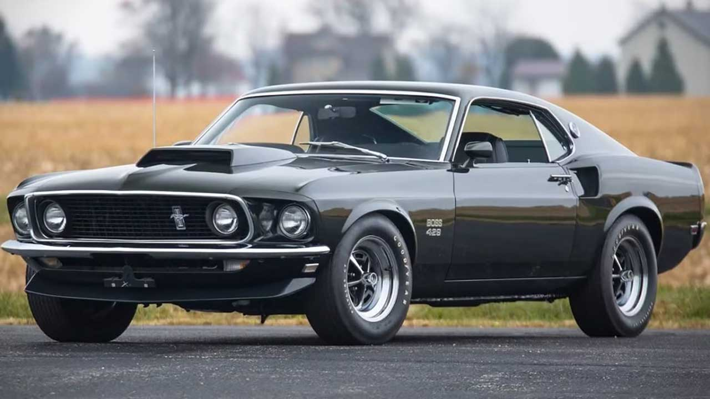

Ford Mustang
Ford established itself as a powerhouse in the muscle car era by pairing lightweight bodies with massive, high-performance V8 engines, most notably through the legendary Mustang, which pioneered the "pony car" segment in 1964. Beyond the Mustang, the company produced iconic heavy-hitters like the Torino Cobra and the drag-strip-dominating Fairlane Thunderbolt, cementing its "Total Performance" reputation. Today, these vehicles remain symbols of American horsepower, characterized by their aggressive styling and a deep-rooted partnership with racing legends like Carroll Shelby

Image via Hot Cars